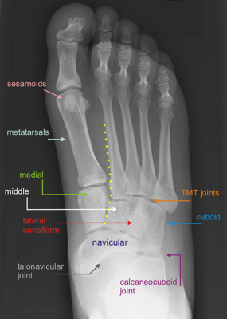
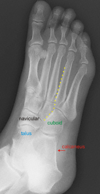
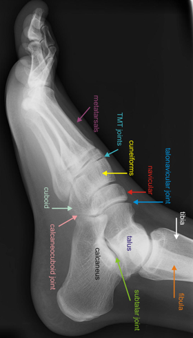

Imaging
Radiographs
- AP, oblique and lateral views of the foot are standard evaluations
- Identify signs of capsular avulsion (chip fractures), degenerative changes (osteophytes), sesamoid integrity, callus
(stress fracture)

Normal AP foot: yellow dotted line highlights normal TMT joint alignment

Normal oblique foot: yellow dotted line hightlights normal TMT joint alignment

Normal lateral foot
- Contralateral views: for comparison
- Increased distance between sesamoids and proximal phalanx compared to the contralateral side implies possible plantar
plate disruption of the 1st toe
- Sesamoid view: a tangential view of the sesamoids can reveal avulsion or osteochondral fractures
- Weight-bearing films: fracture displacement demonstrates instability
- CT or MRI: may be useful indentifying occult plantar plate or sesamoid injuries, stress fracture or occult acute
fractures